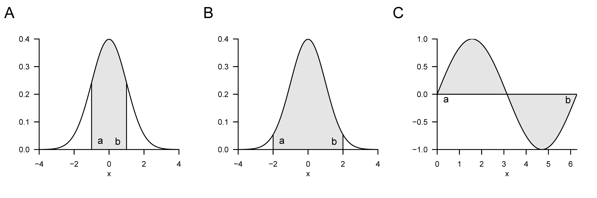
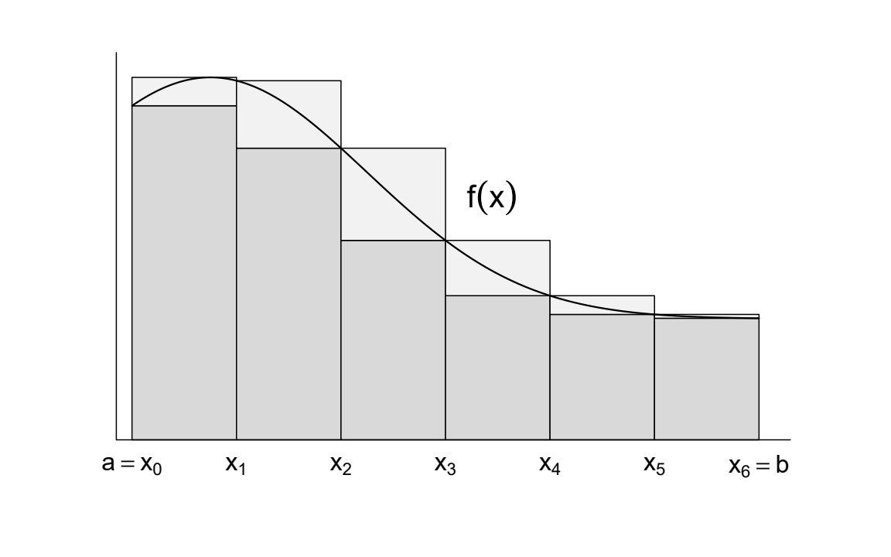
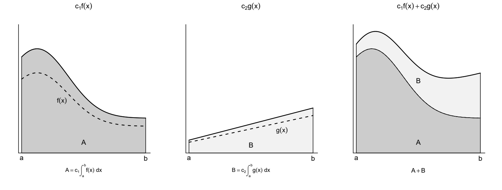
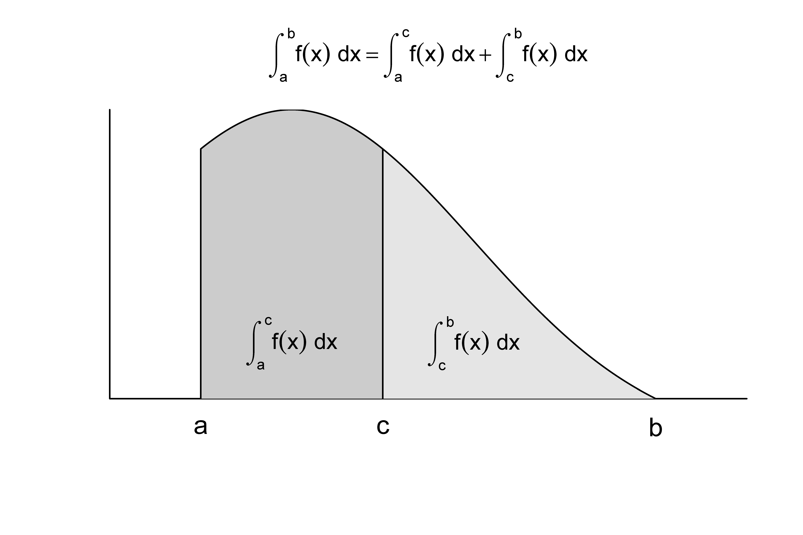
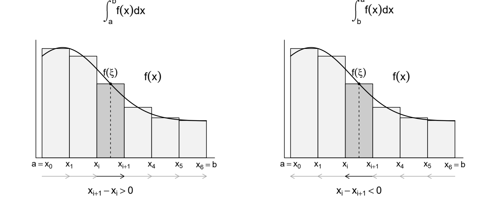
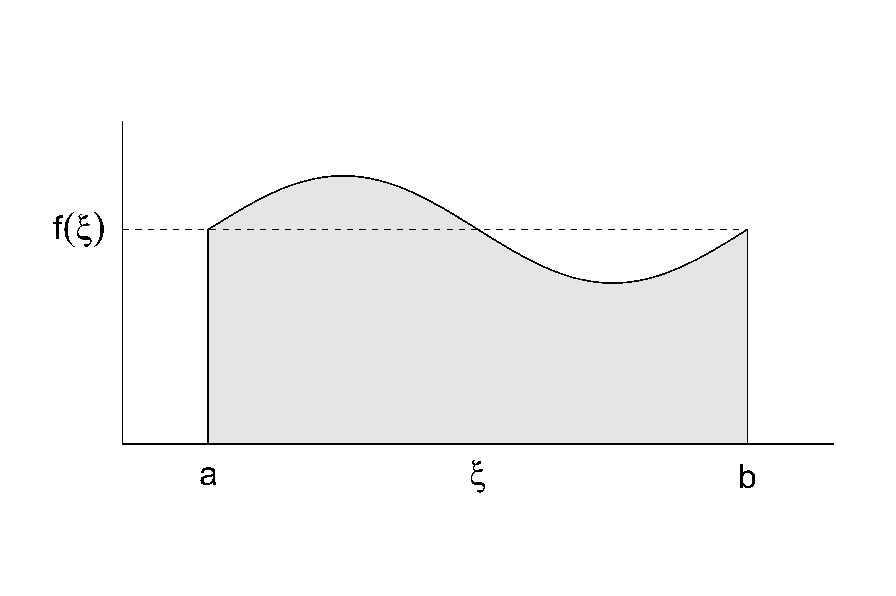

7 Integralrechnung
Dieses Kapitel gibt einen Überblick über zentrale Begriffe der Integralrechnung. Das Hauptaugenmerk liegt dabei durchgängig auf der Klärung von Begrifflichkeiten, ihrer mathematischen Symbolik und der durch sie vermittelten Intuition und weniger auf der konkreten Berechnung von Integralen.
Integrale kommen in der probabilistischen Datenanalyse bei der Definition von Wahrscheinlichkeitsdichtefunktionen (WDF), bei der Berechnung von Wahrscheinlichkeiten und bei der Beziehung zwischen WDF und kumulativen Verteilungsfunktionen (KVF) vor. Auch Erwartungswerte, Varianzen und Kovarianzen werden mithilfe von Integralen beschrieben. Im Mittelpunkt steht hier das aus der Schule bekannte Riemannintegral.
7.1 Unbestimmte Integrale
Wir beginnen mit der Definition des unbestimmten Integrals und dem Begriff der Stammfunktion.
Definition 7.1 (Unbestimmtes Integral und Stammfunktion) Es sei \(I \subseteq \mathbb{R}\) ein offenes Intervall und \(f : I \to \mathbb{R}\) eine Funktion. Eine differenzierbare Funktion \(F : I \to \mathbb{R}\) heißt Stammfunktion von \(f\), wenn \(F' = f\) gilt. Ist \(F\) eine Stammfunktion von \(f\), so heißt die Menge aller Stammfunktionen \[\begin{equation} \{F + c | c \in \mathbb{R}\} \end{equation}\] das unbestimmte Integral von \(f\). Man schreibt dafür auch \[\begin{equation} \int f(x)\,dx = F(x) + c, \mbox{ mit } c \in \mathbb{R}. \end{equation}\] Dabei heißt \(c\) Integrationskonstante und \(f(x)\) Integrand.
Obige Definition besagt, dass die Ableitung der Stammfunktion einer Funktion \(f\) eben \(f\) ist. Das unbestimmte Integral einer Funktion \(f\) ist darüber hinaus die Menge aller durch Addition verschiedener Konstanten \(c \in \mathbb{R}\) gegebenen Stammfunktionen von \(f\). Eine solche Konstante \(c \in \mathbb{R}\) heißt auch Integrationskonstante. Es gilt \(\frac{d}{dx}c = 0\). Das Symbol \(\int f(x) \,dx\) wird als \(F(x) + c\) geschrieben. \(f(x)\) wird in diesem Ausdruck Integrand genannt. \(\int\) und \(\,dx\) haben keine eigentliche Bedeutung, sondern sind lediglich Symbole.
Für die in den vorherigen Abschnitten eingeführten elementaren Funktionen ergeben sich die in Tabelle 7.1 aufgelisteten Stammfunktionen. Man überzeugt sich davon durch Ableiten der jeweiligen Stammfunktion mithilfe der Rechenregeln der Differenzialrechnung. Die unbestimmten Integrale dieser elementaren Funktionen ergeben sich dann direkt aus diesen Stammfunktionen durch Addition einer Integrationskonstanten.
Theorem 7.1 (Stammfunktionen elementarer Funktionen) Für \(k \in \mathbb{N}_0\) und reelle Koeffizienten \(a_0,\ldots,a_k,a,b\) sind folgende Funktionen jeweils Stammfunktionen. Die Definitionsmenge ist \(\mathbb{R}\), bei der Logarithmusfunktion \(]0,\infty[\).
| Name | Funktion | Stammfunktion |
|---|---|---|
| Polynomfunktion | \(f(x) := \sum_{i = 0}^k a_i x^i\) | \(F(x) = \sum_{i = 0}^k \frac{a_i}{i+1}x^{i+1}\) |
| Konstante Funktion | \(f(x) := a\) | \(F(x) = ax\) |
| Identitätsfunktion | \(f(x) := x\) | \(F(x) = \frac{1}{2}x^2\) |
| Linear-affine Funktion | \(f(x) := ax + b\) | \(F(x) = \frac{1}{2}ax^2 + bx\) |
| Quadratfunktion | \(f(x) := x^2\) | \(F(x) = \frac{1}{3}x^3\) |
| Exponentialfunktion | \(f(x) := \exp(x)\) | \(F(x) = \exp(x)\) |
| Logarithmusfunktion | \(f(x) := \ln(x)\) | \(F(x) = x\ln(x) - x\) |
Die in nachfolgendem Theorem zusammengestellten Rechenregeln sind oft hilfreich, um Stammfunktionen von Funktionen zu bestimmen, die sich aus Funktionen mit bekannten Stammfunktionen zusammensetzen.
Theorem 7.2 (Rechenregeln für Stammfunktionen) Es seien \(I,J \subseteq \mathbb{R}\) offene Intervalle. Die folgenden Gleichheiten unbestimmter Integrale gelten bis auf additive Konstanten.
(Summenregel) Besitzen \(f,g : I \to \mathbb{R}\) Stammfunktionen, so gilt für \(a,b \in \mathbb{R}\) \[\begin{equation} \int (af(x) + bg(x))\,dx = a\int f(x)\,dx + b\int g(x)\,dx. \end{equation}\] (Partielle Integration) Für stetig differenzierbare Funktionen \(f,g : I \to \mathbb{R}\) gilt \[\begin{equation} \int f'(x)g(x)\,dx = f(x)g(x) - \int f(x)g'(x)\,dx. \end{equation}\] (Substitutionsregel) Besitzt \(f : J \to \mathbb{R}\) eine Stammfunktion \(F\) und ist \(g : I \to J\) differenzierbar, so gilt \[\begin{equation} \int f(g(x))g'(x)\,dx = F(g(x)) + c, \mbox{ mit } c \in \mathbb{R}. \end{equation}\]
Beweis. Wir beweisen die Rechenregeln für Stammfunktionen mithilfe der Ableitungsregeln. Dazu leiten wir jeweils die rechte Seite der Gleichung ab und zeigen, dass die Ableitung dem Integranden auf der linken Seite entspricht.
(Summenregel) Es seien \[\begin{equation} F := \int f(x)\,dx \mbox{ und } G := \int g(x)\,dx \end{equation}\] Stammfunktionen von \(f\) und \(g\). Dann gilt mit der Summenregel der Ableitung \[\begin{equation} (aF + bG)' = af + bg \Leftrightarrow \int (af(x) + bg(x))\,dx = a\int f(x)\,dx + b\int g(x)\,dx. \end{equation}\] (Partielle Integration) Es sei \[\begin{equation} H := \int f(x)g'(x)\,dx \end{equation}\] eine Stammfunktion von \(fg'\). Dann folgt aus der Summenregel und der Produktregel der Ableitung \[\begin{equation} (fg - H)' = f'g + fg' - fg' = f'g \Leftrightarrow \int f'(x)g(x)\,dx = f(x)g(x) - \int f(x)g'(x)\,dx, \end{equation}\] d.h. \(f(x)g(x) - \int f(x)g'(x)\,dx\) ist eine Stammfunktion von \(f'(x)g(x)\).
(Substitutionsregel) Für die Substitutionsregel liefert die Kettenregel \[\begin{equation} (F(g(x)))' = F'(g(x))g'(x) = f(g(x))g'(x). \end{equation}\] Damit ist \(F(g(x))\) eine Stammfunktion von \(f(g(x))g'(x)\) und dies beweist die Substitutionsregel.
Unbestimmte Integrale nehmen in der Lösung von Differenzialgleichungen einen zentralen Platz ein. Naheliegender ist aber zunächst die Anwendung unbestimmter Integrale im Kontext der Auswertung bestimmter Integrale, wie im nächsten Abschnitt eingeführt.
7.2 Bestimmte Integrale
Anschaulich entspricht ein bestimmtes Integral der vorzeichenbehafteten und auf ein Intervall \([a,b]\) beschränkten Fläche zwischen dem Graphen einer Funktion \(f\) und der \(x\)- Achse (vgl. Abbildung 7.1). Vorzeichenbehaftet heißt dabei, dass Flächen zwischen der \(x\)- Achse und positiven Werten von \(f\) positiv zur Fläche beitragen, Flächen zwischen der \(x\)- Achse und negativen Werten von \(f\) dagegen negativ. So ergeben sich zum Beispiel der Wert des in Abbildung 7.1 A gezeigten bestimmten Integrals zu 0.68, der Wert des in Abbildung Abbildung 7.1 B gezeigten bestimmten Integrals zu 0.95 (die eingezeichnete Fläche ist offensichtlich größer als in Abbildung 7.1 A) und der Wert des in Abbildung 7.1 C gezeigten bestimmten Integrals zu 0 (die eingezeichneten positiven und negativen Flächen gleichen sich genau aus). Der Durchschnittswert von \(f\) auf \([a,b]\) ist \(\frac{1}{b-a}\int_a^b f(x)\,dx\).

Um den Begriff des bestimmten Integrals im Sinne des Riemannschen Integrals einführen zu können, müssen wir zunächst etwas Vorarbeit leisten. Wir beginnen damit, einen Begriff für die Aufteilung eines Intervalls in kleinere Abschnitte einzuführen.
Definition 7.2 (Zerlegung eines Intervalls und Feinheit) Es seien \(a,b \in \mathbb{R}\) mit \(a < b\) und \(n \in \mathbb{N}\). Punkte \(x_0,\ldots,x_n\) mit \[\begin{equation} a = x_0 < x_1 < \cdots < x_n = b \end{equation}\] definieren eine Zerlegung \(Z := (x_0,\ldots,x_n)\) des Intervalls \([a,b]\). Die zugehörigen Teilintervalle sind \([x_{i-1},x_i]\) mit Längen \[\begin{equation} \Delta x_i := x_i - x_{i-1}, \mbox{ für } i \in \{1,\ldots,n\}. \end{equation}\] Die größte Teilintervalllänge \[\begin{equation} \delta(Z) := \max_{1 \le i \le n} \Delta x_i \end{equation}\] heißt Feinheit der Zerlegung \(Z\).
Anschaulich ist \(\Delta x_i\) die Breite der Rechtecke in Abbildung 7.2, wie wir in der Folge sehen werden. Mithilfe der Begriffe der Zerlegung eines Intervalls können wir nun den Begriff der Riemannschen Summen einführen.
Definition 7.3 (Riemannsche Summen) Es sei \(f : [a,b] \to \mathbb{R}\) beschränkt. Es existiere also ein \(c > 0\) mit \(|f(x)| \le c\) für alle \(x \in [a,b]\). Es sei \(Z := (x_0,\ldots,x_n)\) eine Zerlegung von \([a,b]\) und \(\xi := (\xi_1,\ldots,\xi_n)\) eine Wahl von Zwischenpunkten mit \(\xi_i \in [x_{i-1},x_i]\) für \(i \in \{1,\ldots,n\}\). Dann heißt \[\begin{equation} R(f,Z,\xi) := \sum_{i = 1}^n f(\xi_i)\Delta x_i \end{equation}\] Riemannsche Summe von \(f\) bezüglich der Zerlegung \(Z\) und der Zwischenpunkte \(\xi\).
\(|x|\) bezeichnet den Betrag von \(x \in \mathbb{R}\). Die Obersumme verwendet auf jedem Teilintervall das Supremum von \(f\), die Untersumme das Infimum. Bei stetigem \(f\) sind dies Maximum und Minimum auf dem Teilintervall. In Abbildung 7.2 bilden die dunkelgrauen Rechtecke die Untersumme. Zusammen mit den hellgrauen Ergänzungen bilden sie die Obersumme. Für Riemann-integrierbares \(f\) geht die Differenz zwischen Ober- und Untersumme bei \(\delta(Z) \to 0\) gegen null.

Definition 7.4 (Bestimmtes Riemannsches Integral) Es sei \(f : [a,b] \to \mathbb{R}\) beschränkt. Die Funktion \(f\) heißt Riemann-integrierbar, wenn eine Zahl \(L \in \mathbb{R}\) existiert, sodass für jede Folge von Zerlegungen \(Z_k := (x_{k,0},\ldots,x_{k,n_k})\) mit \(\delta(Z_k) \to 0\) und jede Wahl von Zwischenpunkten \(\xi_{k,i} \in [x_{k,i-1},x_{k,i}]\) gilt, dass \[\begin{equation} \lim_{k \to \infty} R(f,Z_k,\xi_k) = L. \end{equation}\] Die Zahl \(L\) heißt bestimmtes Riemannsches Integral von \(f\) und wird mit \[\begin{equation} \int_a^b f(x)\,dx := L \end{equation}\] bezeichnet. Dabei heißen \(a\) und \(b\) untere beziehungsweise obere Integrationsgrenze, \(f(x)\) Integrand und \(x\) Integrationsvariable.
Die Riemannsche Integrierbarkeit einer Funktion und der Wert eines bestimmten Riemannschen Integrals sind also im Sinne einer Grenzwertbildung definiert. Die Theorie der Riemannschen Integrale lässt sich allerdings um die Hauptsätze der Differenzial- und Integralrechnung erweitern, sodass zur konkreten Berechnung eines bestimmten Integrals die Bildung von Zerlegungen und die Bestimmung eines Grenzwertes nur selten nötig ist. Der Einfachheit halber verzichten wir in der Folge auf die Bezeichnungen Riemannsche und sprechen einfach von bestimmten Integralen.
Ein erster Schritt zur Vereinfachung der Berechnung von bestimmten Integralen ist das Feststellen folgender Rechenregeln, für deren Beweis wir auf die weiterführende Literatur verweisen.
Theorem 7.3 (Rechenregeln für bestimmte Integrale) Es seien \(a < b\) und \(f,g : [a,b] \to \mathbb{R}\) Riemann-integrierbar. Dann gelten folgende Rechenregeln:
(Linearität) Für \(c_1,c_2 \in \mathbb{R}\) gilt \[\begin{equation} \int_a^b (c_1f(x) + c_2g(x))\,dx = c_1\int_a^b f(x)\,dx + c_2\int_a^b g(x)\,dx. \end{equation}\] (Additivität) Für \(a < c < b\) gilt \[\begin{equation} \int_a^b f(x)\,dx = \int_a^c f(x)\,dx + \int_c^b f(x)\,dx. \end{equation}\] (Orientierung) Man setzt \[\begin{equation} \int_a^a f(x)\,dx := 0 \mbox{ und } \int_b^a f(x)\,dx := -\int_a^b f(x)\,dx. \end{equation}\] (Integrationsvariable) Es gilt \[\begin{equation} \int_a^b f(x)\,dx = \int_a^b f(y)\,dy. \end{equation}\]
Ein konstanter Faktor skaliert alle Höhen und damit auch das Integral. Beim Addieren der Funktionen addieren sich die Höhen an jeder Stelle. Die beiden Flächen ergeben zusammen die Fläche unter der Summenfunktion. Abbildung 7.3 zeigt dies für \(c_1 = 1.3\) und \(c_2 = 1.2\). Die ungewichteten Funktionen \(f\) und \(g\) sind gestrichelt eingezeichnet.

Man beachte, dass die Linearität des bestimmten Integrals analog zur Assoziativität bei Summen gleicher Länge und der Distributivität bei Multiplikation mit einer Konstante ist (vgl. Theorem 3.1), \[\begin{equation} \sum_{i = 1}^n \left(c_1x_i + c_2y_i\right) = c_1\sum_{i = 1}^n x_i + c_2\sum_{i = 1}^n y_i, \end{equation}\] die Additivität bestimmter Integrale analog zum Aufspalten von Summen ist, und dass auch die Unabhängigkeit des Werts eines Integrals von der Wahl der Integrationsvariablen in der Unabhängigkeit des Werts einer Summe von ihrem Laufindex ihre Entsprechung findet. Eine grafische Darstellung der Integralrechenregel der Additivität zeigt Abbildung 7.4. Die Summe der durch die bestimmten Integrale gegebenen Flächen \(\int_a^c f(x)\,dx\) und \(\int_c^b f(x)\,dx\) mit \(a < c < b\) ergibt sich dabei zur Fläche von \(\int_a^b f(x)\,dx\).
Die Orientierungskonvention ist mit der Additivität verträglich: \[\begin{equation} \int_a^b f(x)\,dx + \int_b^a f(x)\,dx = 0 = \int_a^a f(x)\,dx. \end{equation}\]

Abbildung 7.5 zeigt dieselben Rechtecke mit derselben Höhe \(f(\xi)\), aber umgekehrten Schritten. Bei der Integration von \(a\) nach \(b\) gilt \(x_{i+1} - x_i > 0\), beim Rückweg gilt \(x_i - x_{i+1} < 0\). Die Summenbeiträge wechseln also ihr Vorzeichen: \[\begin{equation} f(\xi)(x_i - x_{i+1}) = -f(\xi)(x_{i+1} - x_i). \end{equation}\]

Die Hauptsätze der Differenzial- und Integralrechnung schließlich ermöglichen es, bestimmte Integrale einer Funktion \(f\) direkt mithilfe der Stammfunktion \(F\) von \(f\) zu berechnen. Für den Beweis des ersten Hauptsatzes der Differenzial- und Integralrechnung benötigen wir den Mittelwertsatz der Integralrechnung, welchen wir hier ohne Beweis wiedergeben und in Abbildung 7.6 veranschaulichen.
Theorem 7.4 (Mittelwertsatz der Integralrechnung) Es seien \(a < b\) und \(f : [a,b] \to \mathbb{R}\) stetig. Dann existiert ein \(\xi \in ]a,b[\) mit \[\begin{equation} \int_a^b f(x)\,dx = f(\xi)(b - a). \end{equation}\] Der Mittelwert von \(f\) auf \([a,b]\) ist daher \[\begin{equation} \frac{1}{b - a}\int_a^b f(x)\,dx = f(\xi). \end{equation}\]
Der Mittelwertsatz der Integralrechnung garantiert die Existenz eines \(\xi \in ]a,b[\), sodass das bestimmte Integral \(\int_a^b f(x)\,dx\) gleich dem Produkt aus der “Rechteckhöhe” \(f(\xi)\) und der “Rechteckbreite” \((b-a)\) ist. In Abbildung 7.6 liegt dieses \(\xi\) genau mittig zwischen \(a\) und \(b\). Dass die sich so ergebende grau eingefärbte Rechteckfläche gleich \(\int_a^b f(x)\,dx\) ist, ergibt sich aus der visuell zumindest nachvollziehbaren Tatsache, dass die Flächen zwischen \(f(x)\) und \(f(\xi)\) im Intervall \([a,\xi]\) und zwischen \(f(\xi)\) und \(f(x)\) im Intervall \([\xi,b]\) den gleichen Betrag haben, erstere aber mit einem negativen Vorzeichen behaftet ist. Der Mittelwertsatz der Integralrechnung garantiert im Allgemeinen aber nur die Existenz eines \(\xi \in ]a,b[\) mit der diskutierten Eigenschaft, gibt aber keine Formel zur Bestimmung von \(\xi\) an.

Mit dieser Vorarbeit können wir nun den ersten Hauptsatz der Differenzial- und Integralrechnung formulieren und beweisen.
Theorem 7.5 (Erster Hauptsatz der Differenzial- und Integralrechnung) Es sei \(I \subseteq \mathbb{R}\) ein offenes Intervall, \(f : I \to \mathbb{R}\) stetig und \(a \in I\) fest. Dann ist die Funktion \[\begin{equation} F : I \to \mathbb{R}, x \mapsto F(x) := \int_a^x f(t)\,dt \end{equation}\] eine Stammfunktion von \(f\). Es gilt also \(F'(x) = f(x)\) für alle \(x \in I\).
Beweis. Es sei \(x \in I\) und \(h \ne 0\) so klein, dass \(x + h \in I\). Additivität und Orientierung des Integrals ergeben für den Newtonschen Differenzenquotienten zunächst \[\begin{equation} \frac{1}{h}\left(F(x+h) - F(x)\right) = \frac{1}{h}\left(\int_a^{x+h} f(t)\,dt - \int_a^x f(t)\,dt\right) = \frac{1}{h}\int_x^{x+h} f(t)\,dt. \end{equation}\] Der Mittelwertsatz der Integralrechnung liefert für positive wie negative \(h\) dann einen Punkt \(\xi_h\) zwischen \(x\) und \(x+h\) mit \[\begin{equation} \frac{1}{h}\left(F(x+h) - F(x)\right) = \frac{1}{h}\int_x^{x+h} f(t)\,dt = f(\xi_h). \end{equation}\] Wegen \(|\xi_h - x| \le |h|\) gilt \(\xi_h \to x\) für \(h \to 0\). Aus der Stetigkeit von \(f\) folgt dann \[\begin{equation} F'(x) := \lim_{h \to 0} \frac{1}{h}\left(F(x+h) - F(x)\right) = \lim_{h \to 0} f(\xi_h) = f(x). \end{equation}\]
Der zweite Hauptsatz der Differenzial- und Integralrechnung besagt, wie man mithilfe der Stammfunktion ein bestimmtes Integral berechnet.
Theorem 7.6 (Zweiter Hauptsatz der Differenzial- und Integralrechnung) Es sei \(I \subseteq \mathbb{R}\) ein offenes Intervall, \(f : I \to \mathbb{R}\) stetig und \(F\) eine Stammfunktion von \(f\). Dann gilt für alle \(a,b \in I\) \[\begin{equation} \int_a^b f(x)\,dx = F(b) - F(a) =: F(x)\vert_a^b. \end{equation}\]
Beweis. Wir wählen einen festen Punkt \(\alpha \in I\) und setzen \(H(x) := \int_\alpha^x f(t)\,dt\). Nach dem ersten Hauptsatz ist \(H\) eine Stammfunktion von \(f\). Daher gilt \(F = H + c\) für eine Konstante \(c \in \mathbb{R}\). Bei der Differenz fällt diese Konstante weg: \[\begin{equation} F(b) - F(a) = H(b) - H(a) = \int_\alpha^b f(t)\,dt - \int_\alpha^a f(t)\,dt. \end{equation}\] Additivität und Orientierung des Integrals ergeben dann \[\begin{equation} F(b) - F(a) = \int_\alpha^b f(t)\,dt - \int_\alpha^a f(t)\,dt = \int_a^\alpha f(t)\,dt + \int_\alpha^b f(t)\,dt = \int_a^b f(t)\,dt = \int_a^b f(x)\,dx. \end{equation}\]
Wir wollen den Zweiten Hauptsatz der Differenzial- und Integralrechnung in drei Beispielen anwenden (vgl. Abbildung 7.7).

Beispiel 7.1 (Bestimmtes Integral der Identitätsfunktion) Wir betrachten die Identitätsfunktion \[\begin{equation} f : \mathbb{R} \to \mathbb{R}, x \mapsto f(x) := x \end{equation}\] und wollen das bestimmte Integral dieser Funktion auf dem Intervall \([0,1]\), also \[\begin{equation} \int_0^1 f(x)\,dx = \int_0^1 x \,dx \end{equation}\] berechnen. Dazu erinnern wir uns, dass eine Stammfunktion von \(f\) durch \[\begin{equation} F : \mathbb{R} \to \mathbb{R}, x \mapsto F(x) := \frac{1}{2}x^2 \end{equation}\] gegeben ist, weil \[\begin{equation} F'(x) = \frac{d}{dx}\left(\frac{1}{2}x^2 \right) = 2 \cdot \frac{1}{2} x^{2-1} = x. \end{equation}\] Einsetzen in den zweiten Hauptsatz der Differenzial- und Integralrechnung ergibt dann \[\begin{equation} \int_0^1 x \,dx = \frac{1}{2}1^2 - \frac{1}{2}0^2 = \frac{1}{2}. \end{equation}\] Dieses Ergebnis ist mit der Intuition, die sich anhand der grauen Fläche in Abbildung 7.7 A ergibt, kongruent.
Beispiel 7.2 (Bestimmtes Integral der Quadratfunktion) Als nächstes betrachten wir die Quadratfunktion \[\begin{equation} f : \mathbb{R} \to \mathbb{R}, x \mapsto f(x) := x^2 \end{equation}\] und wollen das bestimmte Integral dieser Funktion auf dem Intervall \([0,1]\), also \[\begin{equation} \int_0^1 f(x)\,dx = \int_0^1 x^2 \,dx \end{equation}\] berechnen. Dazu erinnern wir uns, dass eine Stammfunktion von \(f\) durch \[\begin{equation} F : \mathbb{R} \to \mathbb{R}, x \mapsto F(x) := \frac{1}{3}x^3 \end{equation}\] gegeben ist, weil \[\begin{equation} F'(x) = \frac{d}{dx}\left(\frac{1}{3}x^3 \right) = 3 \cdot \frac{1}{3} x^{3-1} = x^2. \end{equation}\] Einsetzen in den zweiten Hauptsatz der Differenzial- und Integralrechnung ergibt dann \[\begin{equation} \int_0^1 x^2 \,dx = \frac{1}{3}1^3 - \frac{1}{3}0^3 = \frac{1}{3}. \end{equation}\] Dieses Ergebnis ist mit der Intuition, die sich aus dem Vergleich der grauen Flächen in Abbildung 7.7 A und Abbildung 7.7 B ergibt, kongruent.
Beispiel 7.3 (Bestimmtes Integral einer linear-affinen Funktion) Schließlich betrachten wir die linear-affine Funktion \[\begin{equation} f : \mathbb{R} \to \mathbb{R}, x \mapsto f(x) := -x + 1 \end{equation}\] und wollen das bestimmte Integral dieser Funktion auf dem Intervall \([0,2]\), also \[\begin{equation} \int_0^2 f(x)\,dx = \int_0^2 -x + 1 \,dx \end{equation}\] berechnen. Dazu erinnern wir uns, dass eine Stammfunktion der linear-affinen Funktion mit \(a = -1\) und \(b = 1\) (vgl. Tabelle 7.1) durch \[\begin{equation} F : \mathbb{R} \to \mathbb{R}, x \mapsto F(x) := -\frac{1}{2}x^2 + x \end{equation}\] gegeben ist, weil \[\begin{equation} F'(x) = \frac{d}{dx}\left(-\frac{1}{2}x^2 + x \right) = - 2 \cdot \frac{1}{2} x^{2-1} + 1 \cdot x^{1-1} = -x + 1. \end{equation}\] Einsetzen in den Zweiten Hauptsatz der Differenzial- und Integralrechnung ergibt dann \[\begin{equation} \int_0^2 -x + 1 \,dx = \left(-\frac{1}{2}2^2 + 2 \right) - \left(-\frac{1}{2}0^2 + 0 \right) = -2 + 2 - 0 = 0. \end{equation}\] Dieses Ergebnis ist mit der Intuition kongruent, dass sich die positive und die negative graue Fläche in Abbildung 7.7 C ausgleichen.
7.3 Uneigentliche Integrale
Uneigentliche Integrale erweitern den Integralbegriff auf unendliche Integrationsgrenzen. Ihr Wert wird durch Grenzwerte bestimmter Integrale erklärt.
Definition 7.5 (Uneigentliche Integrale) \(f : \mathbb{R} \to \mathbb{R}\) sei eine univariate reellwertige Funktion. Mit den Definitionen \[\begin{equation} \int_{-\infty}^b f(x)\,dx := \lim_{a \to -\infty} \int_a^b f(x)\,dx \mbox{ und } \int_a^\infty f(x)\,dx := \lim_{b \to \infty} \int_a^b f(x)\,dx \end{equation}\] und der Additivität von Integralen \[\begin{equation} \int_{-\infty}^\infty f(x)\,dx = \int_{-\infty}^b f(x)\,dx + \int_b^{\infty}f(x)\,dx \end{equation}\] wird der Begriff des bestimmten Integrals auf die unbeschränkten Integrationsintervalle \(]-\infty,b]\), \([a,\infty[\) und \(]-\infty,\infty[\) erweitert. Integrale mit unbeschränkten Integrationsintervallen heißen uneigentliche Integrale. Wenn die entsprechenden Grenzwerte existieren, sagt man, dass die uneigentlichen Integrale konvergieren.
Für die WDF \(f\) einer Zufallsvariable ist die Forderung \(\int_{-\infty}^{\infty} f(x)\,dx = 1\) zentral.
Beispiel 7.4 (Uneigentliches Integral) Als Beispiel betrachten wir das uneigentliche Integral der Funktion \[\begin{equation} f : ]0,\infty[ \to \mathbb{R}, x \mapsto f(x) := \frac{1}{x^2} \end{equation}\] über alle \(x \ge 1\), also \[\begin{equation} \int_1^{\infty} \frac{1}{x^2}\,dx. \end{equation}\] Nach den Festlegungen in der Definition uneigentlicher Integrale gilt \[\begin{equation} \int_1^{\infty} \frac{1}{x^2}\,dx = \lim_{b \to \infty} \int_1^b \frac{1}{x^2}\,dx. \end{equation}\] Mit der Stammfunktion \(F(x) = -x^{-1}\) von \(f(x) = x^{-2}\) ergibt sich für das bestimmte Integral in obiger Gleichung \[\begin{equation} \int_1^b \frac{1}{x^2}\,dx = F(b) - F(1) = -\frac{1}{b} - \left(-\frac{1}{1}\right) = -\frac{1}{b} + 1. \end{equation}\] Es ergibt sich also \[\begin{equation} \int_1^{\infty} \frac{1}{x^2}\,dx = \lim_{b \to \infty} \int_1^b \frac{1}{x^2}\,dx = \lim_{b \to \infty}\left(-\frac{1}{b} + 1\right) = - \lim_{b \to \infty}\frac{1}{b} + \lim_{b \to \infty} 1 = 0 + 1 = 1. \end{equation}\]
7.4 Mehrdimensionale Integrale
Bisher haben wir nur Integrale univariater reellwertiger Funktionen betrachtet. Der Integralbegriff lässt sich auch auf multivariate reellwertige Funktionen erweitern. Allerdings ist dann der Integrationsbereich der Funktion nicht notwendigerweise so einfach zu beschreiben wie ein Intervall. Insbesondere sind beispielsweise schon bei bivariaten Funktionen arbiträr geformte Integrationsbereiche möglich. Wir wollen hier nun den einfachsten Fall eines Hyperrechtecks betrachten. In diesem Fall können wir mehrdimensionale bestimmte Integrale wie folgt definieren.
Definition 7.6 (Mehrdimensionale Integrale) \(f : \mathbb{R}^n \to \mathbb{R}\) sei eine multivariate reellwertige Funktion. Dann heißen Integrale der Form \[\begin{equation} \int\limits_{[a_1,b_1]\times \cdots \times [a_n,b_n]} f(x)\,dx = \int_{a_1}^{b_1} \cdots \int_{a_n}^{b_n} f(x_1,\ldots,x_n)\,dx_n\cdots\,dx_1 \end{equation}\] mehrdimensionale bestimmte Integrale auf Hyperrechtecken. Weiterhin heißen Integrale der Form \[\begin{equation} \int_{\mathbb{R}^n} f(x)\,dx = \int_{-\infty}^{\infty} \cdots \int_{-\infty}^{\infty} f(x_1,...,x_n)\,dx_1...\,dx_n \end{equation}\] mehrdimensionale uneigentliche Integrale.
Man kann multivariate reellwertige Funktionen nicht nur auf Hyperrechtecken, sondern im Prinzip auf beliebigen Integrationsgebieten integrieren. Dies kann sich jedoch oft schwierig gestalten. Der Satz von Fubini besagt, dass man mehrdimensionale Integrale in beliebiger Koordinatenfolge auswerten kann, also dass zum Beispiel \[\begin{equation} \int_{a_1}^{b_1} \left(\int_{a_2}^{b_2} f(x_1,x_2)\,dx_2\right)\,dx_1 = \int_{a_2}^{b_2} \left(\int_{a_1}^{b_1} f(x_1,x_2)\,dx_1\right)\,dx_2. \end{equation}\] Für die WDF eines Zufallsvektors ist die Forderung \(\int_{\mathbb{R}^n} f(x)\,dx = 1\) zentral.
Beispiel 7.5 (Zweidimensionalens bestimmtes Integral) Als Beispiel für Definition 7.6 betrachten wir das zweidimensionale bestimmte Integral der Funktion \[\begin{equation} f : \mathbb{R}^2 \to \mathbb{R}, (x_1,x_2) \mapsto f(x_1,x_2) := x_1^2 + 4x_2 \end{equation}\] auf dem Rechteck \([0,1] \times [0,1]\). Wir betrachten \[\begin{equation} \int_0^1 \int_0^1 x_1^2 + 4x_2 \,dx_1\,dx_2 = \int_0^1 \left(\int_0^1 x_1^2 + 4x_2 \,dx_1\right)\,dx_2 \end{equation}\] also zunächst das innere Integral. \(x_2\) nimmt dabei die Rolle einer Konstanten ein. Eine Stammfunktion von \(g(x_1) := x_1^2 + 4 x_2\) ist \(G(x_1) = \frac{1}{3}x_1^3 + 4x_2x_1\), wovon man sich durch Ableiten von \(G\) überzeugt. Es ergibt sich also für das innere Integral \[\begin{align} \begin{split} \int_0^1 x_1^2 + 4x_2 \,dx_1 & = G(1) - G(0) \\ & = \frac{1}{3}\cdot 1^3 + 4x_2\cdot 1 - \frac{1}{3}\cdot 0^3 - 4x_2\cdot 0 \\ & = \frac{1}{3} + 4x_2. \end{split} \end{align}\] Betrachten des äußeren Integrals \[ \int_0^1 4x_2 + \frac{1}{3} \,dx_2 \] ergibt dann mit der Stammfunktion \[\begin{equation} H(x_2) = 2x_2^2 + \frac{1}{3}x_2 \end{equation}\] von \[\begin{equation} h(x_2) := 4x_2 + \frac{1}{3}, \end{equation}\] dass \[\begin{align} \begin{split} \int_0^1 \int_0^1 x_1^2 + 4x_2 \,dx_1\,dx_2 & = \int_0^1 4x_2 + \frac{1}{3} \,dx_2 \\ & = H(1) - H(0) \\ & = 2\cdot 1^2 + \frac{1}{3}\cdot 1 - 2\cdot 0^2 - \frac{1}{3}\cdot 0 \\ & = \frac{7}{3}. \end{split} \end{align}\]
Selbstkontrollfragen
- Geben Sie die Definition des Begriffs der Stammfunktion wieder.
- Geben Sie die Definition des Begriffs des unbestimmten Integrals wieder.
- Erläutern Sie die intuitive Bedeutung des Begriffs des Riemannschen Integrals.
- Geben Sie den Ersten Hauptsatz der Differenzial- und Integralrechnung wieder.
- Geben Sie den Zweiten Hauptsatz der Differenzial- und Integralrechnung wieder.
- Erläutern Sie den Begriff des uneigentlichen Integrals.
- Erläutern Sie den Begriff des mehrdimensionalen Integrals.
Lösungen
- Siehe Definition 7.1.
- Siehe Definition 7.1.
- Das Riemannsche Integral entspricht der vorzeichenbehafteten Fläche zwischen dem Funktionsgraphen und der \(x\)-Achse.
- Siehe Theorem 7.5.
- Siehe Theorem 7.6.
- Uneigentliche Integrale behandeln unendliche Integrationsgrenzen durch geeignete Grenzwerte.
- Mehrdimensionale Integrale sind Integrale multivariater Funktionen über Teilmengen ihrer Definitionsmenge.